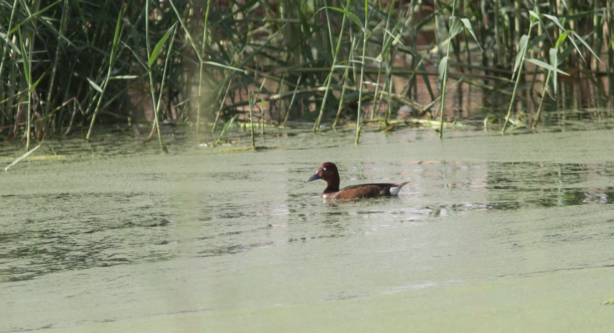

Préparé par Sayd | 8 septembre 2026
Les oiseaux qui traversent le ciel portent une histoire plus longue que la distance visible. Derrière chaque voyage se trouvent des lieux de reproduction, des haltes pour se reposer et se nourrir et des quartiers d’hiver. Ce qui arrive à l’un de ces endroits peut influer sur un parcours entier à travers plusieurs pays et continents.
Avec la migration d’automne, des informations et rapports internationaux récents donnent un aperçu des difficultés de ces voyages et des moyens mis en œuvre pour les protéger : recherche scientifique, préservation des habitats, encadrement de la chasse et participation du public à la surveillance.
Plus de la moitié des espèces migratrices sont en déclin
Le 28 juillet, le British Trust for Ornithology (BTO) a présenté les résultats d’une synthèse mondiale publiée dans la revue Nature Reviews Biodiversity, à laquelle ont participé des chercheurs d’institutions internationales, dont Georgetown University et la Smithsonian Institution.
Selon cette synthèse, les effectifs de 51 % des espèces d’oiseaux migrateurs dans le monde diminuent. Ce pourcentage concerne la part des espèces en déclin ; il ne signifie pas que la moitié des oiseaux a disparu.
Parmi les pressions figurent la perte d’habitats, le changement climatique et les phénomènes météorologiques extrêmes, les pesticides, les maladies et les collisions avec les bâtiments et d’autres structures. Les chercheurs appellent donc à une protection couvrant le cycle de vie entier des oiseaux et reliant les efforts des pays qu’ils traversent.
Source : BTO et synthèse scientifique, résultats présentés le 28 juillet.
En Albanie, les flamants au centre d’un dossier environnemental

Dans un article publié le 7 septembre, BirdLife International est revenu sur les mobilisations en faveur de la zone de Vjosa–Narta, en Albanie, après cent jours d’actions surnommées les « manifestations des flamants ».
Selon l’organisation, cette zone côtière accueille plus de 200 espèces d’oiseaux et se trouve sur une route migratoire entre l’Afrique et l’Europe. Les contestations concernent des travaux et projets d’aménagement dans une aire protégée et les risques qu’ils font peser sur les zones humides.
BirdLife indique que le chenal reliant la lagune de Narta à la mer a été fermé pendant les travaux puis rouvert. L’organisation avertit que la perturbation de la circulation de l’eau menace l’équilibre de la lagune et la nourriture des oiseaux. Ce dossier rappelle une condition fondamentale de la protection : l’oiseau doit trouver un milieu accueillant lorsqu’il se pose.
Source : BirdLife, 7 septembre 2026.
De la Croatie à l’Égypte, des haltes interdépendantes

Dans un article publié le 26 août, BirdLife a choisi le fuligule nyroca — l’espèce appelée Ferruginous Duck dans la source anglaise — pour illustrer l’importance des liens entre les haltes migratoires. Elle précise que l’espèce est classée « quasi menacée » et que sa survie dépend du bon état de zones humides très éloignées les unes des autres.
L’article cite le bassin de Pokuplje en Croatie et le lac Nasser en Égypte comme sites importants pour cette espèce et d’autres oiseaux d’eau. Il présente aussi une initiative de trois ans, soutenue par une subvention de 7,5 millions de livres sterling, visant à protéger et restaurer des sites sur la voie afro-eurasienne.
La leçon de ce voyage est que la protection d’un site prend plus de valeur lorsqu’elle s’inscrit dans celle des autres lieux dont l’oiseau a besoin.
Source : BirdLife, 26 août 2026.
Chasse encadrée : quotas suivis et décisions réexaminées
Sur la chasse, la Fédération européenne pour la chasse et la conservation (FACE), représentante d’associations de chasseurs, a publié le 18 juillet son rapport 2026 sur la tourterelle des bois.
La fédération présente une gestion adaptative des prélèvements : fixer des quotas, enregistrer les oiseaux prélevés, suivre l’approche du plafond autorisé et fermer la saison lorsqu’il est atteint. Selon son évaluation, les effectifs de tourterelles continuent d’augmenter sur la voie occidentale, tandis que la situation reste moins favorable sur la voie centrale et orientale.
Ces résultats sont présentés par une fédération de chasseurs et doivent être lus dans leur contexte précis. Ils ne signifient pas que toutes les espèces d’oiseaux se sont rétablies et ne justifient pas de généraliser la chasse à d’autres régions. Ils posent néanmoins une question concrète : comment relier l’autorisation de chasser aux données sur les effectifs, à la capacité des populations de se renouveler et à des moyens réels de contrôle ?
Source : rapport FACE, juillet 2026.
Quelle leçon en tire Sayd ?
Ces événements nous invitent à considérer la saison comme une responsabilité de connaissance. Reconnaître correctement les espèces, documenter les observations, protéger les haltes et respecter la loi peuvent réunir le chasseur responsable, l’observateur d’oiseaux, le photographe et le chercheur.
À nos yeux, une saison bien gérée se mesure à la clarté des règles, à la qualité des données, à l’efficacité de leur application et à la possibilité, pour les oiseaux, de poursuivre leur voyage et de revenir les années suivantes.